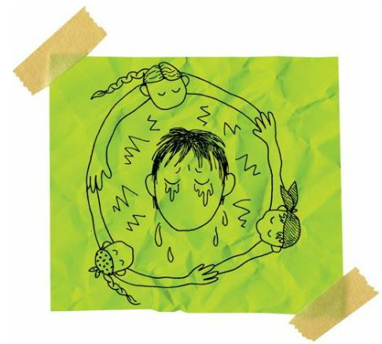
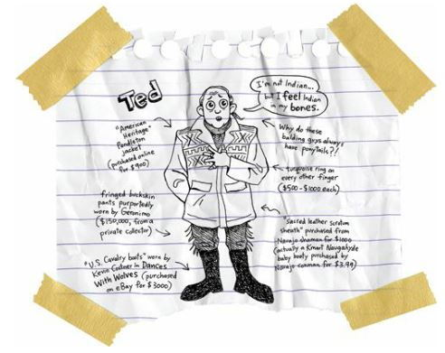
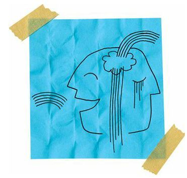
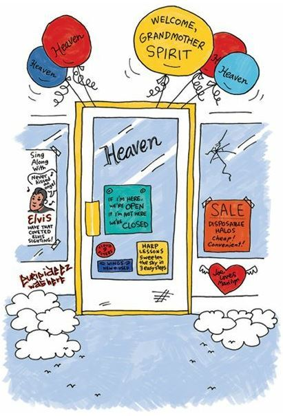

Wake
We held Grandmother’s wake three days later. We knew that people would be coming in large numbers. But we were stunned because almost two thousand Indians showed up that day to say good-bye.
And nobody gave me any crap.
I mean, I was still the kid who had betrayed the tribe. And that couldn’t be forgiven. But I was also the kid who’d lost his grandmother. And everybody knew that losing my grandmother was horrible. So they all waved the white flag that day and let me grieve in peace.

And after that, they stopped hassling me whenever they saw me on the rez. I mean, I still lived on the rez, right? And I had to go get the mail and get milk from the trading post and just hang out, right? So I was still a part of the rez.
People had either ignored me or called me names or pushed me.
But they stopped after my grandmother died.
I guess they realized that I was in enough pain already. Or maybe they realized they’d been cruel jerks.
I wasn’t suddenly popular, of course. But I wasn’t a villain anymore.
No matter what else happened between my tribe and me, I would always love them for giving me peace on the day of my grandmother’s funeral.
Even Rowdy just stood far away.
He would always be my best friend, no matter how much he hated me.
We had to move the coffin out of the Spokane Tribal Longhouse and set it on the fifty-yard line of the football field.
We were lucky the weather was good.
Yep, about two thousand Indians (and a few white folks) sat and stood on the football field as we all said good-bye to the greatest Spokane Indian in history.
I knew that my grandmother would have loved that send-off.
It was crazy and fun and sad.
My sister wasn’t able to come to the funeral. That was the worst part about it. She didn’t have enough money to get back, I guess. That was sad. But she promised me she’d sing one hundred mourning songs that day.
We all have to find our own ways to say good-bye.
Tons of people told stories about my grandmother.
But there was one story that mattered most of all.
About ten hours into the wake, a white guy stood. He was a stranger. He looked vaguely familiar. I knew I’d seen him before, but I couldn’t think of where. We all wondered exactly who he was. But nobody knew. That wasn’t surprising. My grandmother had met thousands of people.
The white guy was holding this big suitcase.
He held that thing tight to his chest as he talked.
“Hello,” he said. “My name is Ted.”
And then I remembered who he was. He was a rich and famous billionaire white dude. He was famous for being filthy rich and really weird.
My grandmother knew Billionaire Ted!
Wow.
We all were excited to hear this guy’s story. And so what did he have to say?

We all groaned.
We’d expected this white guy to be original. But he was yet another white guy who showed up on the rez because he loved Indian people SOOOOOOOO much.
Do you know how many white strangers show up on Indian reservations every year and start telling Indians how much they love them?
Thousands.
It’s sickening.
And boring.
“Listen,” Ted said. “I know you’ve heard that before. I know white people say that all the time. But I still need to say it. I love Indians. I love your songs, your dances, and your souls. And I love your art. I collect Indian art.”
Oh, God, he was a collector. Those guys made Indians feel like insects pinned to a display board. I looked around the football field. Yep, all of my cousins were squirming like beetles and butterflies with pins stuck in their hearts.
“I’ve collected Indian art for decades,” Ted said. “I have old spears. Old arrowheads. I have old armor. I have blankets. And paintings. And sculptures. And baskets. And jewelry.”
Blah, blah, blah, blah.
“And I have old powwow dance outfits,” he said.
Now that made everybody sit up and pay attention.
“About ten years ago, this Indian guy knocked on the door of my cabin in Montana.”
Cabin, my butt. Ted lived in a forty-room log mansion just outside of Bozeman.
“Well, I didn’t know this stranger,” Ted said. “But I always open my door to Indians.”
Oh, please.
“And this particular Indian stranger was holding a very beautiful powwow dance outfit, a woman’s powwow dance outfit. It was the most beautiful thing I’d ever seen. It was all beaded blue and red and yellow with a thunderbird design. It must have weighed fifty pounds. And I couldn’t imagine the strength of the woman who could dance beneath that magical burden.”
Every woman in the world could dance that way.
“Well, this Indian stranger said he was in a desperate situation. His wife was dying of cancer and he needed money to pay for her medicine. I knew he was lying. I knew he’d stolen the outfit. I could always smell a thief.”
Smell yourself, Ted.
“And I knew I should call the police on this thief. I knew I should take that outfit away and find the real owner. But it was so beautiful, so perfect, that I gave the Indian stranger a thousand dollars and sent him on his way. And I kept the outfit.”
Whoa, was Ted coming here to make a confession? And why had he chosen my grandmother’s funeral for his confession?
“For years, I felt terrible. I’d look at that outfit hanging on the wall of my Montana cabin.”
Mansion, Ted, it’s a mansion. Go ahead; you can say it: MANSION!
“And then I decided to do some research. I hired an anthropologist, an expert, and he quickly pointed out that the outfit was obviously of Interior Salish origin. And after doing a little research, he discovered that the outfit was Spokane Indian, to be specific. And then, a few years ago, he visited your reservation undercover and learned that this stolen outfit once belonged to a woman named Grandmother Spirit.”
We all gasped. This was a huge shock. I wondered if we were all part of some crazy reality show called When Billionaires Pretend to be Human. I looked around for the cameras.
“Well, ever since I learned who really owned this outfit, I’ve been torn. I always wanted to give it back. But I wanted to keep it, too. I couldn’t sleep some nights because I was so torn up by it.”
Yep, even billionaires have DARK NIGHTS OF THE SOUL.
“And, well, I finally couldn’t take it anymore. I packed up the outfit and headed for your reservation, here, to hand-deliver the outfit back to Grandmother Spirit. And I get here only to discover that she’s passed on to the next world. It’s just devastating.”
We were all completely silent. This was the weirdest thing any of us had ever witnessed. And we’re Indians, so trust me, we’ve seen some really weird stuff.
“But I have the outfit here,” Ted said. He opened up his suitcase and pulled out the outfit and held it up. It was fifty pounds, so he struggled with it. Anybody would have struggled with it.
“So if any of Grandmother Spirit’s children are here, I’d love to return her outfit to them.”
My mother stood and walked up to Ted.
“I’m Grandmother Spirit’s only daughter,” she said.
My mother’s voice had gotten all formal. Indians are good at that. We’ll be talking and laughing and carrying on like normal, and then, BOOM, we get all serious and sacred and start talking like some English royalty.
“Dearest daughter,” Ted said. “I hereby return your stolen goods. I hope you forgive me for returning it too late.”
“Well, there’s nothing to forgive, Ted,” my mother said. “Grandmother Spirit wasn’t a powwow dancer.”
Ted’s mouth dropped open.
“Excuse me,” he said.
“My mother loved going to powwows. But she never danced. She never owned a dance outfit. This couldn’t be hers.”
Ted didn’t say anything. He couldn’t say anything.
“In fact, looking at the beads and design, this doesn’t look Spokane at all. I don’t recognize the work. Does anybody here recognize the beadwork?”
“No,” everybody said.
“It looks more Sioux to me,” my mother said. “Maybe Oglala. Maybe. I’m not an expert. Your anthropologist wasn’t much of an expert, either. He got this way wrong.”
We all just sat there in silence as Ted mulled that over.
Then he packed his outfit back into the suitcase, hurried over to his waiting car, and sped away.
For about two minutes, we all sat quiet. Who knew what to say? And then my mother started laughing.
And that set us all off.
Two thousands Indians laughed at the same time.
We kept laughing.
It was the most glorious noise I’d ever heard.
And I realized that, sure, Indians were drunk and sad and displaced and crazy and mean, but, dang, we knew how to laugh.
When it comes to death, we know that laughter and tears are pretty much the same thing.

And so, laughing and crying, we said good-bye to my grandmother. And when we said good-bye to one grandmother, we said good-bye to all of them.
Each funeral was a funeral for all of us.
We lived and died together.
All of us laughed when they lowered my grandmother into the ground.
And all of us laughed when they covered her with dirt.
And all of us laughed as we walked and drove and rode our way back to our lonely, lonely houses.
